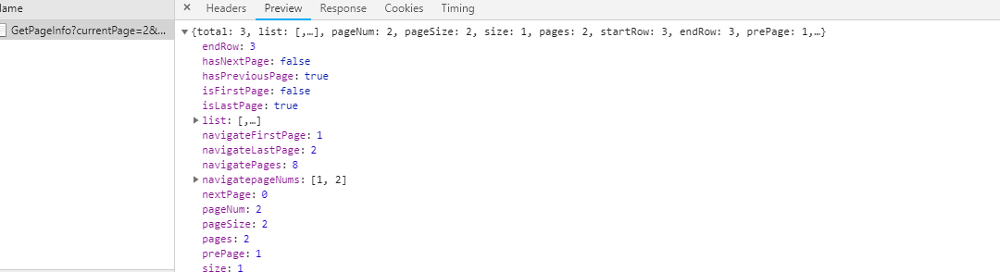

1 <dependency>
2 <groupId>com.github.pagehelper</groupId>
3 <artifactId>pagehelper</artifactId>
4 <version>5.1.4</version>
5 </dependency>
6
7 <dependency>
8 <groupId>com.github.pagehelper</groupId>
9 <artifactId>pagehelper-spring-boot-starter</artifactId>
10 <version>1.2.10</version>
11 </dependency> 1 package org.demo.customer.common;
2
3 import java.io.Serializable;
4 import java.util.Collection;
5 import java.util.List;
6 import com.github.pagehelper.Page;
7 import com.github.pagehelper.PageSerializable;
8
9 /*
10 *
11 */
12 public class PageInfo<T> extends PageSerializable<T> {
13 //当前页
14 private int pageNum;
15
16 //每页的数量
17 private int pageSize;
18
19 //当前页的数量
20 private int size;
21
22 //总页数
23 private int pages;
24
25 //由于startRow和endRow不常用，这里说个具体的用法
26 //可以在页面中"显示startRow到endRow 共size条数据"
27
28 //当前页面第一个元素在数据库中的行号
29 private int startRow;
30 //当前页面最后一个元素在数据库中的行号
31 private int endRow;
32
33 //前一页
34 private int prePage;
35 //下一页
36 private int nextPage;
37
38 //是否为第一页
39 private boolean isFirstPage = false;
40 //是否为最后一页
41 private boolean isLastPage = false;
42 //是否有前一页
43 private boolean hasPreviousPage = false;
44 //是否有下一页
45 private boolean hasNextPage = false;
46 //导航页码数
47 private int navigatePages;
48 //所有导航页号
49 private int[] navigatepageNums;
50 //导航条上的第一页
51 private int navigateFirstPage;
52 //导航条上的最后一页
53 private int navigateLastPage;
54
55 public PageInfo() {
56 }
57
58 /**
59 * 包装Page对象
60 *
61 * @param list
62 */
63 public PageInfo(List<T> list) {
64 this(list, 8);
65 }
66
67 /**
68 * 包装Page对象
69 *
70 * @param list page结果
71 * @param navigatePages 页码数量
72 */
73 public PageInfo(List<T> list, int navigatePages) {
74 super(list);
75 if (list instanceof Page) {
76 Page page = (Page) list;
77 this.pageNum = page.getPageNum();
78 this.pageSize = page.getPageSize();
79
80 this.pages = page.getPages();
81 this.size = page.size();
82 //由于结果是>startRow的，所以实际的需要+1
83 if (this.size == 0) {
84 this.startRow = 0;
85 this.endRow = 0;
86 } else {
87 this.startRow = page.getStartRow() + 1;
88 //计算实际的endRow（最后一页的时候特殊）
89 this.endRow = this.startRow - 1 + this.size;
90 }
91 } else if (list instanceof Collection) {
92 this.pageNum = 1;
93 this.pageSize = list.size();
94
95 this.pages = this.pageSize > 0 ? 1 : 0;
96 this.size = list.size();
97 this.startRow = 0;
98 this.endRow = list.size() > 0 ? list.size() - 1 : 0;
99 }
100 if (list instanceof Collection) {
101 this.navigatePages = navigatePages;
102 //计算导航页
103 calcNavigatepageNums();
104 //计算前后页，第一页，最后一页
105 calcPage();
106 //判断页面边界
107 judgePageBoudary();
108 }
109 }
110
111 public static <T> PageInfo<T> of(List<T> list) {
112 return new PageInfo<T>(list);
113 }
114
115 public static <T> PageInfo<T> of(List<T> list, int navigatePages) {
116 return new PageInfo<T>(list, navigatePages);
117 }
118
119 /**
120 * 计算导航页
121 */
122 private void calcNavigatepageNums() {
123 //当总页数小于或等于导航页码数时
124 if (pages <= navigatePages) {
125 navigatepageNums = new int[pages];
126 for (int i = 0; i < pages; i++) {
127 navigatepageNums[i] = i + 1;
128 }
129 } else { //当总页数大于导航页码数时
130 navigatepageNums = new int[navigatePages];
131 int startNum = pageNum - navigatePages / 2;
132 int endNum = pageNum + navigatePages / 2;
133
134 if (startNum < 1) {
135 startNum = 1;
136 //(最前navigatePages页
137 for (int i = 0; i < navigatePages; i++) {
138 navigatepageNums[i] = startNum++;
139 }
140 } else if (endNum > pages) {
141 endNum = pages;
142 //最后navigatePages页
143 for (int i = navigatePages - 1; i >= 0; i--) {
144 navigatepageNums[i] = endNum--;
145 }
146 } else {
147 //所有中间页
148 for (int i = 0; i < navigatePages; i++) {
149 navigatepageNums[i] = startNum++;
150 }
151 }
152 }
153 }
154
155 /**
156 * 计算前后页，第一页，最后一页
157 */
158 private void calcPage() {
159 if (navigatepageNums != null && navigatepageNums.length > 0) {
160 navigateFirstPage = navigatepageNums[0];
161 navigateLastPage = navigatepageNums[navigatepageNums.length - 1];
162 if (pageNum > 1) {
163 prePage = pageNum - 1;
164 }
165 if (pageNum < pages) {
166 nextPage = pageNum + 1;
167 }
168 }
169 }
170
171 /**
172 * 判定页面边界
173 */
174 private void judgePageBoudary() {
175 isFirstPage = pageNum == 1;
176 isLastPage = pageNum == pages || pages == 0;
177 hasPreviousPage = pageNum > 1;
178 hasNextPage = pageNum < pages;
179 }
180
181 public int getPageNum() {
182 return pageNum;
183 }
184
185 public void setPageNum(int pageNum) {
186 this.pageNum = pageNum;
187 }
188
189 public int getPageSize() {
190 return pageSize;
191 }
192
193 public void setPageSize(int pageSize) {
194 this.pageSize = pageSize;
195 }
196
197 public int getSize() {
198 return size;
199 }
200
201 public void setSize(int size) {
202 this.size = size;
203 }
204
205 public int getStartRow() {
206 return startRow;
207 }
208
209 public void setStartRow(int startRow) {
210 this.startRow = startRow;
211 }
212
213 public int getEndRow() {
214 return endRow;
215 }
216
217 public void setEndRow(int endRow) {
218 this.endRow = endRow;
219 }
220
221 public int getPages() {
222 return pages;
223 }
224
225 public void setPages(int pages) {
226 this.pages = pages;
227 }
228
229 public int getPrePage() {
230 return prePage;
231 }
232
233 public void setPrePage(int prePage) {
234 this.prePage = prePage;
235 }
236
237 public int getNextPage() {
238 return nextPage;
239 }
240
241 public void setNextPage(int nextPage) {
242 this.nextPage = nextPage;
243 }
244
245 public boolean isIsFirstPage() {
246 return isFirstPage;
247 }
248
249 public void setIsFirstPage(boolean isFirstPage) {
250 this.isFirstPage = isFirstPage;
251 }
252
253 public boolean isIsLastPage() {
254 return isLastPage;
255 }
256
257 public void setIsLastPage(boolean isLastPage) {
258 this.isLastPage = isLastPage;
259 }
260
261 public boolean isHasPreviousPage() {
262 return hasPreviousPage;
263 }
264
265 public void setHasPreviousPage(boolean hasPreviousPage) {
266 this.hasPreviousPage = hasPreviousPage;
267 }
268
269 public boolean isHasNextPage() {
270 return hasNextPage;
271 }
272
273 public void setHasNextPage(boolean hasNextPage) {
274 this.hasNextPage = hasNextPage;
275 }
276
277 public int getNavigatePages() {
278 return navigatePages;
279 }
280
281 public void setNavigatePages(int navigatePages) {
282 this.navigatePages = navigatePages;
283 }
284
285 public int[] getNavigatepageNums() {
286 return navigatepageNums;
287 }
288
289 public void setNavigatepageNums(int[] navigatepageNums) {
290 this.navigatepageNums = navigatepageNums;
291 }
292
293 public int getNavigateFirstPage() {
294 return navigateFirstPage;
295 }
296
297 public int getNavigateLastPage() {
298 return navigateLastPage;
299 }
300
301 public void setNavigateFirstPage(int navigateFirstPage) {
302 this.navigateFirstPage = navigateFirstPage;
303 }
304
305 public void setNavigateLastPage(int navigateLastPage) {
306 this.navigateLastPage = navigateLastPage;
307 }
308
309 @Override
310 public String toString() {
311 final StringBuilder sb = new StringBuilder("PageInfo{");
312 sb.append("pageNum=").append(pageNum);
313 sb.append(", pageSize=").append(pageSize);
314 sb.append(", size=").append(size);
315 sb.append(", startRow=").append(startRow);
316 sb.append(", endRow=").append(endRow);
317 sb.append(", total=").append(total);
318 sb.append(", pages=").append(pages);
319 sb.append(", list=").append(list);
320 sb.append(", prePage=").append(prePage);
321 sb.append(", nextPage=").append(nextPage);
322 sb.append(", isFirstPage=").append(isFirstPage);
323 sb.append(", isLastPage=").append(isLastPage);
324 sb.append(", hasPreviousPage=").append(hasPreviousPage);
325 sb.append(", hasNextPage=").append(hasNextPage);
326 sb.append(", navigatePages=").append(navigatePages);
327 sb.append(", navigateFirstPage=").append(navigateFirstPage);
328 sb.append(", navigateLastPage=").append(navigateLastPage);
329 sb.append(", navigatepageNums=");
330 if (navigatepageNums == null) {
331 sb.append("null");
332 } else {
333 sb.append('[');
334 for (int i = 0; i < navigatepageNums.length; ++i) {
335 sb.append(i == 0 ? "" : ", ").append(navigatepageNums[i]);
336 }
337 sb.append(']');
338 }
339 sb.append('}');
340 return sb.toString();
341 }
342
343 }1 public PageInfo<Customer> GetPageInfo(int currentPage, int pageSize) {
2 PageHelper.startPage(currentPage, pageSize);
3
4 List<Customer> list = customerMapper.GetDataList();
5 PageInfo<Customer> pageInfo = new PageInfo<>(list);
6 return pageInfo;
7 }
currentPage